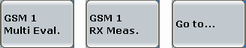
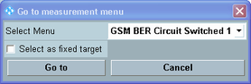

When using the GSM signaling application and a GSM measurement in parallel, it is recommended to use a shortcut softkey to switch to the measurement.

Using one of the softkeys ensures that the measurement is configured compatible to the settings of the signaling application. When you use the softkeys to switch to the GSM multi-evaluation measurement, the combined signal path scenario is activated automatically in the measurement.
- The measurement and the signaling application can be used in parallel, i.e. both DL signal transmission and measurement can be switched on.
- The signaling RF settings are also used for the measurement.
- Some measurement control settings are configured compatible with the signaling settings.
- The frame trigger signal provided by the signaling application is selected as trigger source by the measurement.
- Additional softkeys and hotkeys are displayed in the measurement, so that the signaling application can be controlled and configured from the measurement.
If the softkey label equals "Go to...", the softkey opens a dialog box with a list of all available GSM measurements. If the softkey label indicates a measurement name instead of "Go to...", this measurement has been assigned to the softkey as fixed target, see "Select as fixed target".
Three shortcut softkeys are available and can be set to different fixed targets.

Selects the target measurement you want to switch to.
Sets the selected measurement as fixed target of the softkey. The softkey label indicates the measurement name and switches directly to the selected target without opening the dialog box.
When the dialog box has been disabled, you can still change the target measurement or re-enable the dialog box using the configuration menu, see "Measurement Connection Parameters".
Press "Go to" button to switch to the selected measurement or "Cancel" to abort.